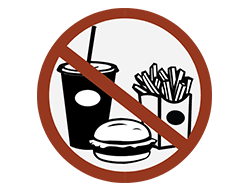
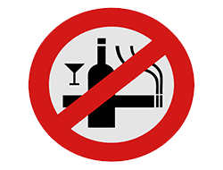

Causes of Cancer
GENETIC INFLUENCE
A family history of cancer puts you at a higher risk for developing the disease. It does not necessarily mean you will get the cancer because other non genetic environmental factors which may promote or hinder the cancer should also be present for the cancer to develop. Having regular checkups helps to detect the cancer early.

CARCINOGENIC CHEMICALS & FOOD
Chemical carcinogens such as asbestos, benzene, arsenic and diesel exhaust and certain carcinogenic foods such as salted, pickled, smoked and charred foods can cause cancer. Taking Vitamin C supplements and Vitamin C rich foods may protect against the effects carcinogenic foods causing cancer.
OVEREXPOSURE TO ESTROGEN
Too much estrogen in a woman's blood system puts her at increased risk for some gynecological cancers such as Breast Cancer & uterine cancer. Estrogen level enhances during the first period, pregnancy and age at pregnancy, age at menopause, weight, physical activity, and diet. The ways to reduce the estrogen level are doing regular aerobic exercise, minimizing alcohol, eating a low-fat diet and having a baby before 35 years of age.
ULTRAVIOLET RADIATION
Ultraviolet rays of the sun damages DNA of cells. Over exposure to these rays cause skin cancers. Covering well and using a sunscreen lotion with a high SPF can prevent the onset of cancer.
IONIZING RADIATION
Overexposure to radiation, such as X rays and nuclear radiation, can cause DNA injury that may lead to cancer. Avoiding X-rays unless absolutely necessary or not living near a nuclear power plant or nuclear waste disposal site

SMOKING AND ALCOHOL
Smoking can be a causative factor for different cancers such as cancer of the lungs, the upper respiratory tract, esophagus, bladder, pancreas, stomach, liver, kidney, colon, and rectum. Passive smoking can also cause Lung Cancer among nonsmokers. Intake of alcohol also may lead to several cancers like mouth, throat, esophagus, stomach, liver cancer etc. So quit smoking and drinking alcohol to avoid cancers.
DIET
Avoid animal fats especially red meat which is associated with several different types of cancer, including the colon, rectum, stomach prostate etc. Eating more soy-based foods, fiber, fruits, and vegetables, can offer some protection against cancer. A diet high in dark yellow and orange fruits and vegetables, will block the formation of chemical compounds known as 'free radicals' that can damage DNA in cells leading to cancer.
OTHERS
Most cancers can be kept at bay by following proper lifestyle habits. Along with taking care of the above mentioned factors, maintaining ideal weight with exercise or physical activity for a minimum of 30-45 minutes per day is beneficial to prevent the onset of cancer. Regular checkups at the recommended age should be done.